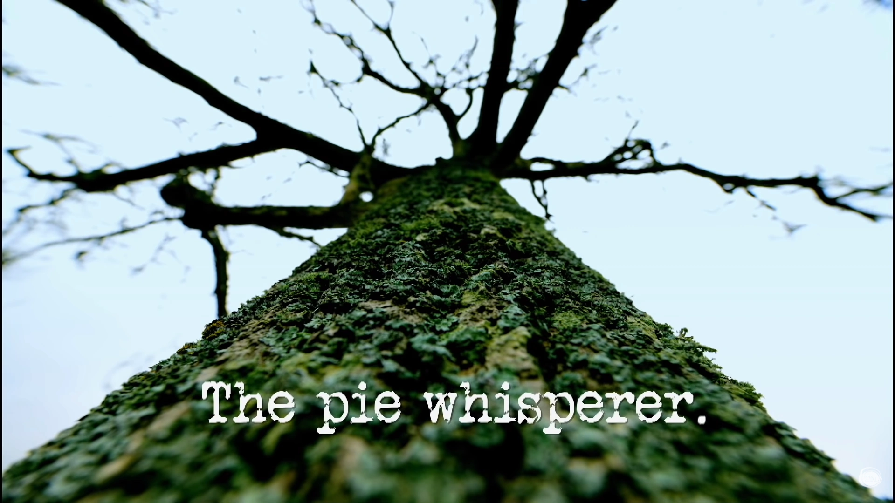

Prize Task
Most Impressive Item
| Contestant | What They Brought In | Greg's Score | My Score | Change |
|---|---|---|---|---|
| Frank Skinner | Leather Christmas Hat | 4 | 3 | ▼ −1 |
| Josh Widdicombe | Pointless trophy | 2 | 4 | ▲ +2 |
| Roisin Conaty | Methuselah of Champagne | 3 | 1 | ▼ −2 |
| Romesh Ranganathan | Arsenal cap | 1 | 2 | ▲ +1 |
| Tim Key | London Marathon participant's medal | 5 | 5 | — |
Task 1
High Five a 55 Year Old
| Contestant | Result | Greg's Score | My Score | Change |
|---|---|---|---|---|
| Frank Skinner | Two 27 year olds and a 1 year old after 12 mins 44 secs | 2 | 0 | ▼ −2 |
| Josh Widdicombe | 3 mins 18 secs | 5 | 5 | — |
| Roisin Conaty | 6 mins 12 secs | 4 | 3 | ▼ −1 |
| Romesh Ranganathan | A 50 year old after 1 hour | 1 | 0 | ▼ −1 |
| Tim Key | 4 mins 29 secs | 3 | 4 | ▲ +1 |
Task 2
Identify the contents of these pies. You may touch the pies, but you may not breach their pastry.
| Contestant | Result | Greg's Score | My Score | Change |
|---|---|---|---|---|
| Frank Skinner | None correct | 1 | 3 | ▲ +2 |
| Josh Widdicombe | 3 correct, but breached the frozen peas pie | 2 | 0 | ▼ −2 |
| Roisin Conaty | Assume none correct, as no correct guesses were shown | 4 | 4 | — |
| Romesh Ranganathan | 3 correct, but breached the toothpaste pie | 3 | 0 | ▼ −3 |
| Tim Key | 5 correct | 5 | 5 | — |
Task 3
Do something that will look impressive in reverse. The Taskmaster will see whatever act you perform played backwards. You must therefore do something backwards that will look impressive when the footage is played in reverse.
| Contestant | Greg's Score | My Score | Change |
|---|---|---|---|
| Frank Skinner | 1 | 1 | — |
| Josh Widdicombe | 4 | 2 | ▼ −2 |
| Roisin Conaty | 5 | 3 | ▼ −2 |
| Romesh Ranganathan | 5 | 5 | — |
| Tim Key | 3 | 4 | ▲ +1 |
Live Task
Crack the code, unshackle yourself and sprint 1 metre.
| Contestant | Result | Greg's Score | My Score | Change |
|---|---|---|---|---|
| Frank Skinner | 5th | 1 | 1 | — |
| Josh Widdicombe | 3rd | 3 | 3 | — |
| Roisin Conaty | 1st | 5 | 5 | — |
| Romesh Ranganathan | 2nd | 4 | 4 | — |
| Tim Key | 4th | 2 | 2 | — |
Final scores
| Contestant | Greg's Final Scores | My Final Scores | Change |
|---|---|---|---|
| Tim Key | 18 | 20 | ▲ +2 |
| Roisin Conaty | 21 | 16 | ▼ −5 |
| Josh Widdicombe | 16 | 14 | ▼ −2 |
| Romesh Ranganathan | 14 | 11 | ▼ −3 |
| Frank Skinner | 9 | 8 | ▼ −1 |